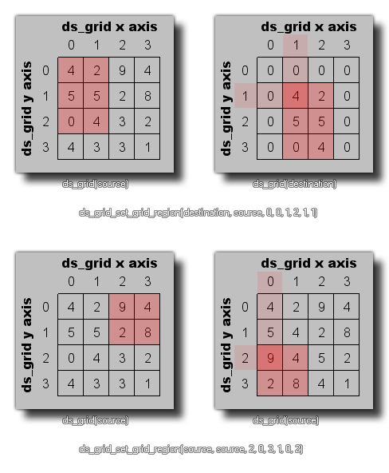

Cette fonction peut être utilisée pour copier le contenu d'une zone rectangulaire de cellules de la grille d'un ds_grid (défini précédemment) vers un autre, ou pour copier une région à l'intérieur de la même grille. Les images suivantes illustrent les deux possibilités d'utilisation de cette fonction: 
ds_grid_set_grid_region(index, source, x1, y1, x2, y2, xpos, ypos);
| Argument | La description |
|---|---|
| index | L'index de la grille de destination. |
| source | L'index de la grille source. |
| x1 | La position gauche de la région des cellules à copier à partir de la grille source. |
| y1 | La position la plus haute de la région de cellules à copier à partir de la grille source. |
| x2 | La bonne position de la région des cellules à copier à partir de la grille source. |
| y2 | La position inférieure de la région de cellules à copier à partir de la grille source. |
| xpos | La position x sur la grille de destination vers laquelle copier la région source. |
| ypos | La position y sur la grille de destination vers laquelle copier la région source. |
N/A
ds_grid_set_grid_region(grid, t_grid, 0, 0, 5, 5,
10, 10)
Cela permet de copier la région des cellules de (0,0) à (5,5) de la grille indexée dans la variable "t_grid" et de les copier dans la position (10,10) de la grille indexée dans la variable "grille".